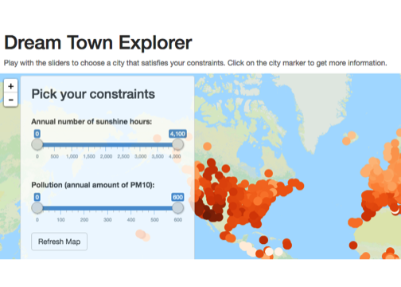
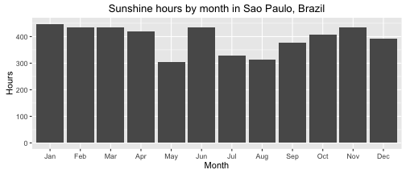

Imagine becoming a freelance Data Scientist and being able to work from anywhere in the world...
...with thousands of beautiful locations on our planet, how do you choose the perfect one?
Katja Abramova
Imagine becoming a freelance Data Scientist and being able to work from anywhere in the world...
...with thousands of beautiful locations on our planet, how do you choose the perfect one?
I have created an app that lets you browse the world map and explore a variety of locations.
You can play with the sliders to see only the locations that satisfy the following constraints:

Additionally, whenever you click on a location, you can see a plot of sunshine distribution over the whole year, like this one:
yeardata <- readRDS("yeardata.Rds")
ylong <- melt(yeardata)
ggplot(ylong[ylong$Station.Name=='Sao Paulo',], aes(x=variable, y=value)) + geom_bar(stat="identity") +
xlab("Month") + ylab("Hours") + ggtitle("Sunshine hours by month in Sao Paulo, Brazil") + ylim(0, 450)

If you want to contribute to the project, fork my github repo.
If you have suggestions on which constraints I should add to the app, please post them here.
The data used in the project comes from UN data, World Meteorological Organization and
World Health Organization.